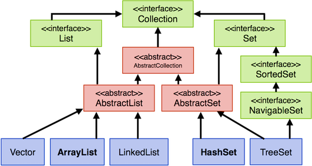

Abstrakte Klassen¶
Abstrakte Klassen haben wir bereits verwendet, ohne bis her zu wissen, worum es sich dabei handelt. Wenn wir uns nochmal die "Vererbungshierarchie" von Collection anschauen, dann finden wir darin
- Interfaces: die Klassen
Collection,List,Set,SortedSetundNavigableSetsind solche Interfaces (dazu kommen wir in der nächsten Lektion) und - Abtrakte Klassen: die Klassen
AbstractCollection,AbstractListundAbstractSetsind solche abstrakten Klassen (die schauen wir uns jetzt an)

Klassen - allgemein¶
Wir haben uns bis jetzt Klassen erstellt, um
- sie als einen neuen (Referenz-)Typ zu verwenden, um
- von diesen Klassen zu erben und somit alle Eigenschaften (Variablen und Methoden) dieser Klasse wiederzuverwenden und um
- daraus Objekte zu erzeugen. Diese Objekte weisen alle die gleichen Eigenschaften (Variablen und Methoden) auf. Diese Eigenschaften sind entweder in der Klasse definiert, von der wir Objekte erzeugen oder sie wurden in dieser Klasse von einer anderen Klasse geerbt.
Angenommen, in der Klasse wurde eine Methode implementiert
public void eineImplementierteMethode()
{
// Anweisungen
}
, dann konnten alle Objekte, die wir von dieser Klasse erzeugt haben, diese Methode aufrufen und ausführen refVariable.eineImplementierteMethode();.
Klassen - abstrakt¶
Abstrakte Klassen sind etwas anders. Von ihnen können wir keine Objekte erzeugen. Das heißt, für abstrakte Klassen gelten nur die beiden ersten Punkte der oberen Aufzählung. Abstrakte Klassen werden erstellt, um
- sie als einen neuen (Referenz-)Typ zu verwenden, um
- von diesen Klassen alle Eigenschaften erben zu lassen.
Der dritte obere Punkt gilt nicht! Wir können von abstrakten Klassen keine Objekte erzeugen.
Eine abstrakte Klasse enthält eine oder mehrere abstrakte Methoden. Oder besser andersherum: Eine Klasse, die eine oder mehrere abstrakte Methoden enthält, ist eine abstrakte Klasse.
Abstrakte Methoden¶
Abstrakte Methoden sind Methoden, die nicht implementiert sind, d.h. sie haben keinen Methodenrumpf. Eine abstrakte Methode besteht nur aus einem Methodenkopf (gefolgt von einem Semikolon):
public abstract void eineAbstrakteMethode();
Das Schlüsselwort abstract gibt an, dass die Methode nicht implementiert wird, sondern nur abstrakt beschreibt,
- wie der Name der Methode lautet,
- welche Parameter die Methode erwartet,
- wie der Rückgabetyp der Methode ist und
- wie der Sichtbarkeitsmodifizierer dieser Methode ist.
Prinzipiell ist für abstrakte Methoden zu beachten, dass sie das Schlüsselwort abstract im Methodenkopf deklarieren und dass abstrakte Methode keinen Methodenrumpf hat, also keine { }. Die Deklaration einer abstrakten Methode endet aber mit einem Semikolon!
Verwendung abstrakter Klassen¶
Eine Klasse, die eine oder mehrere abstrakte Methoden enthält, ist eine abstrakte Klasse. Abtrakte Klassen dienen
- als Typ und
- als Basisklasse, d.h. von abstrakten Klassen wird geerbt.
Von abstrakten Klassen abgeleitete Klassen (also Klassen, die von einer abstrakten Klasse erben), müssen die geerbten Methoden implementieren (ansonsten wären sie selbst wieder abstrakt)!
Ein Beispiel¶
Wir erstellen uns eine abstrakte Klasse Shape, welche zwei abstrakte Methoden enthält, perimeter() und area().
public abstract class Shape
{
public abstract double perimeter();
public abstract double area();
}
Beachten Sie, dass eine Klasse selbst als abstract deklariert werden muss, wenn sie abstrakte Methoden enthält. Deshalb enthält die Klassendeklaration in Zeile 1 ebanfalls das Schlüsselwort abstract. Sie liesse sich auch sonst gar nicht compilieren.
Shape kann nun bereits als Typ verwendet werden. Es lassen sich aber keine Objekte von der Klasse Shape erzeugen. Vielmehr ist die Klasse Shape auch dazu da, um von ihr zu erben. Wir erzeugen uns deshalb eine Klasse Rectangle, die von Shape erbt.
Wenn wir nun schreiben:
1 2 3 4 | |
dann ist Rectangle rot unterstrichen und Eclipse bietet uns zwei QuickFixes an:
Add unimplemnted methodsoderMake type Rectangle abstract
Durch das Erben von Shape haben wir auch die beiden abstrakten Methoden perimeter() und area() geerbt. Wir haben nun entweder die Möglichkeit, diese Methoden zu implementieren oder die Klasse Rectangle ist selbst eine abstrakte Klasse. Wir wählen QuickFix 1 und lassen die Methoden hinzufügen:
1 2 3 4 5 6 7 8 9 10 11 12 13 14 15 16 17 18 | |
Eclipse fügt die zu implementierenden Methoden genau so ein, wie wir sie geerbt haben (also als public und mit Rückgabetyp double sowie den in Shape definierten Namen). Nun sind die bedien Methoden aber jeweils implementiert (aber noch nicht richtig - TODO). Da beide Methoden nun einen Methodenrumpf enthalten (Zeilen 6-9 und 13-16), sind sie nicht mehr abstrakt und somit ist auch die Klasse Rectangle keine abstrakte Klasse.
Eine sinnvolle Implementierung der Klasse Rectangle sieht z.B. so aus, dass wir zwei Objektvariablen definieren, die die Breite und Höhe eines Rechtecks beschreiben, dass wir einen parametrisierten Konstruktor hinzufügen und dass wir unter Verwendung der Werte der Objektvariablen die Methoden perimeter() und area() sinnvoll implementieren:
1 2 3 4 5 6 7 8 9 10 11 12 13 14 15 16 17 18 19 20 21 22 | |
Natürlich könnte (und sollte) die Klasse auch noch um geeignete Implementierungen für mindestens die von Object geerbten Methoden equals() und toString() enthalten.
Wir können beliebig oft von der Klasse Shape erben, d.h. wir können nun beliebig viele Klasse erstellen, die von der Klasse Shape erben. Für jede dieser Klassen gilt nun:
- ein Objekt dieser Klasse (z.B. ein Objekt der Klasse
Rectangle) "besitzt" die Methodenperimeter()undarea(), - ein Objekt dieser Klasse ist auch vom (Laufzeit-)Typ
Shape.
Wir erzeugen uns eine weitere Klasse, um diese Tatsachen näher zu betrachten:
1 2 3 4 5 6 7 8 9 10 11 12 13 14 15 16 17 18 19 20 21 22 | |
Beispielsweise könnte nun in einer beliebigen Klasse eine Methode implementiert werden, in der ein Shape als Parameter verwendet wird und die für dieses Shape die Methode perimeter() oder area() aufruft. Es ist ja sicher, dass jedes Objekt vom Typ Shape diese Methoden als Eigenschaft "besitzt". Betrachten wir folgende TestklasseShape:
1 2 3 4 5 6 7 8 9 10 11 12 13 14 15 16 17 18 19 20 21 22 23 24 25 26 27 28 29 30 31 32 33 34 35 36 37 38 39 40 41 42 43 44 45 46 47 48 49 50 | |